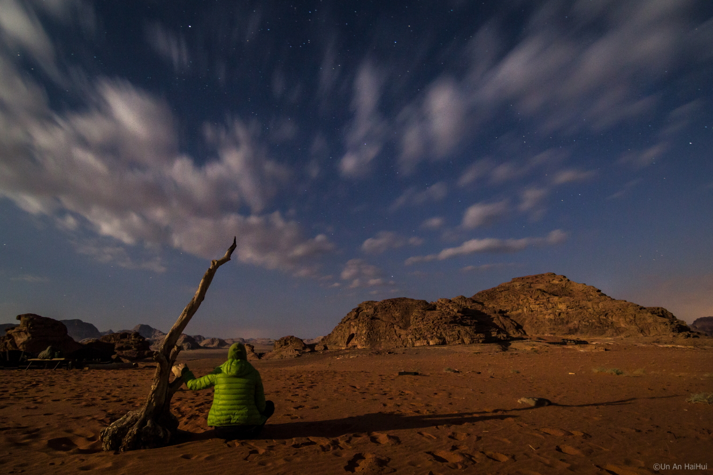

Sahara, cel mai mare desert | AniDeȘcoală.ro Desertul Lençóis Maranhenses se afla in parcul national Lençóis Maranhenses si acopera o zona de 155.000 hectare de nisip auriu si lagune cu apa albastra. Diferenta dintre desertul Lençóis Maranhenses si alte deserturi este ca aici, cantitatea de apa este 300 ori mai mare decat in Sahara, creandu-se astfel iazuri cu apa cristalina, intre ...
Sahara Olteniei, deșertul apărut pe 100.000 de hectare în ... Masada a fost redescoperită în 1838, reconstruită începând cu 1966, iar din 2001 este inclusă în Patrimoniul UNESCO. Accesul la fortăreață se face fie cu telecabina de la nivelul Mării Moarte, fie, din partea opusă, printre dunele de nisip ale deșertului. Adulții plătesc 28 de shekeli iar copiii, 14 shekeli.
Mediul desertic - rasfoiesc.com Sahara, cel mai mare deşert, are o suprafaţă de 8 800 000 km2 (după alte surse 8 400 000 km2 sau 9 065 000 km2) - mai mare decât întreg continentul
Desertul Sahara - cel mai mare de pe pamant – Exista dune de nisip in Desertul Sahara inalte de 180 de metri – Clima desertului Sahara fiind cea mai fierbinte de pe glob, temperaturile depasesc 50 de grade Celsius vara. Cu toate acestea, se poate ajunge la temperaturi foarte scazute pe timpul noptii.
Ce se află sub nisipul din desertul Sahara? Deșertul Sahara, o istorie acoperită de mult nisip 5 min. by Tiberiu M 2 luni ago 2 luni ago. 422 views. Deșerul Sahara este una dintre cele mai misterioase și fascinante zone de pe Terra. Specialiștii susțin că ascunde numeroase dintre secretele planetei nostre, o adevărată istorie uitată sau necunoscută, acoperită de dunele de nisip.
DESERTUL SAHARA - TERRA (Planeta Pamant) Când auzim de Sahara, mulți dintre noi ne gândim la un pustiu de nisip şi piatră – cu soare arzător. La o lume aproape sterilă, încinsă şi uscată. Însă, în Sahara există totuşi viaţă – câteva animale şi plante miraculos adaptate acestor condiţii extreme, însă există şi oaze în care apa hrăneşte plantaţii, animale şi oameni.
Desertul Negev - povestea mea din Israel - Marius Iancu De fapt, la ora actuală, în România există aproximativ 220.000 de hectare acoperite cu dune de nisip, însă doar 80.000 de hectare sunt situate compact în jurul localităţii Dăbuleni, sub forma unei întinderi continue de teren acoperite de nisip.
VIDEO Algeria: A nins in desertul Sahara - International ... Mediul desertic. Localizare. Mediul desertic se extinde intre 15 0 si 35 0 latitudine.. In functie de conditiile de ariditate, deserturile se diferentiaza in deserturi hiperaride (cu precipitatii sub 50 mm/an), deserturi aride (50-150 mm/an) si semideserturi (150-250 mm/an).Cele mai intinse deserturi sunt in Africa (Sahara, Kalahari, Namib), Asia (Peninsula Arabia, Iran, Pakistan, Thar in ...

Explorează Autentificare Join Media Fotografii Ilustrații Vectori Filme Alegerea Editorului Popular Images Popular Videos Community Blog Forum Artists Camere foto About Întrebări frecvente Termeni Confidenţialitate Despre noi API Language Čeština Dansk Deutsch English Español Français Indonesia Italiano Magyar Nederlands Norsk Polski Português Română Slovenčina Suomi Svenska Türkçe Việt ไทย Български Русский Ελληνική 日本語 한국어 简体中文 Autentificare Join Încarcă Fotografii Ilustrații Vectori Filme ✖ ‹ › Căutare sigură Populare Cele mai recente Viitoare Populare ✓ Alegerea Editorului Imagini Imagini ✓ Fotografii Grafică vectorială Ilustrații Filme Orientare Orice orientare ✓ Orizontal Vertical Categorie